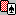
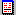

View Meu
Commands
Expose All Cards
Use this
command to toggle face-up display of all players’ cards.
Shortcuts
Toolbar:

Keys: Ctrl+E
Score
Use
this command to show the score status for the games being played.
For more information about scores see Score Dialogs and Scoring.
Shortcuts
Toolbar:

Keys: F12
Double Dummy Results
Use
this command to calculate and show Double Dummy Results for
the game currently being played.
For more information about double dummy results see Double Dummy Results.
Shortcuts
Toolbar:
Toolbar
Use
this command to display and hide the Toolbar, which includes buttons
for some of the most common commands in ZBridge, such as to deal a new
hand or save a game. A check mark appears next to the menu
item
when the Toolbar is displayed.
The toolbar is dockable. To
dock it to the main program window, drag it towards any edge of the
main window until the outline changes shape, then release the mouse
button. To undock the toolbar, grab its double vertical or
horizontal gripper handle and drag it away from the edge of the main
window.
Statusbar
Use this
command to display and hide the Statusbar.
A check mark appears next to the menu item when the Statusbar is
displayed.